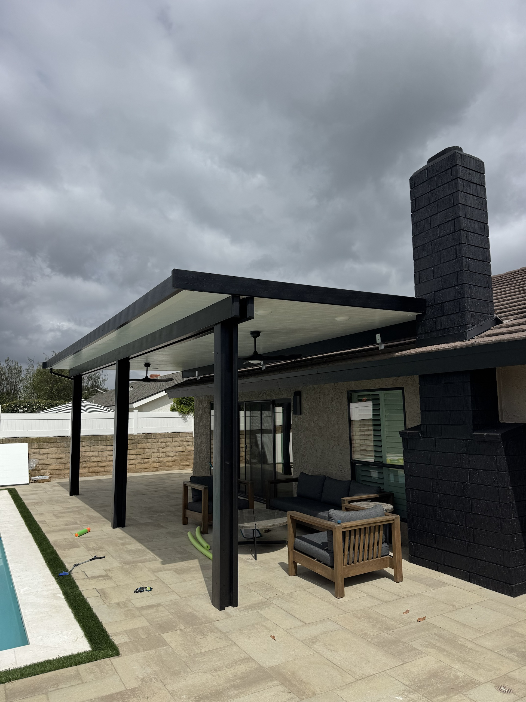
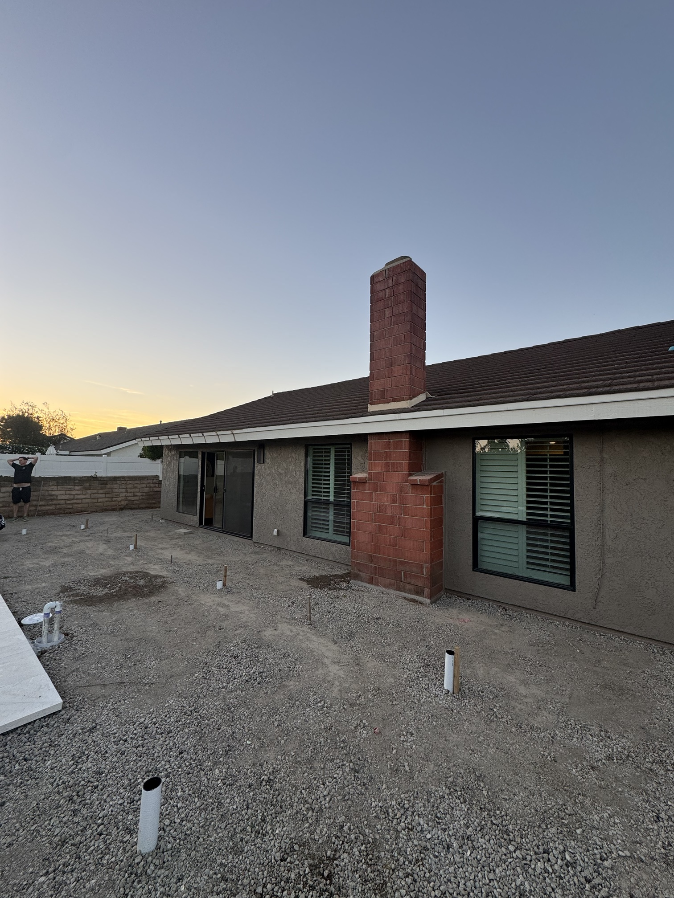
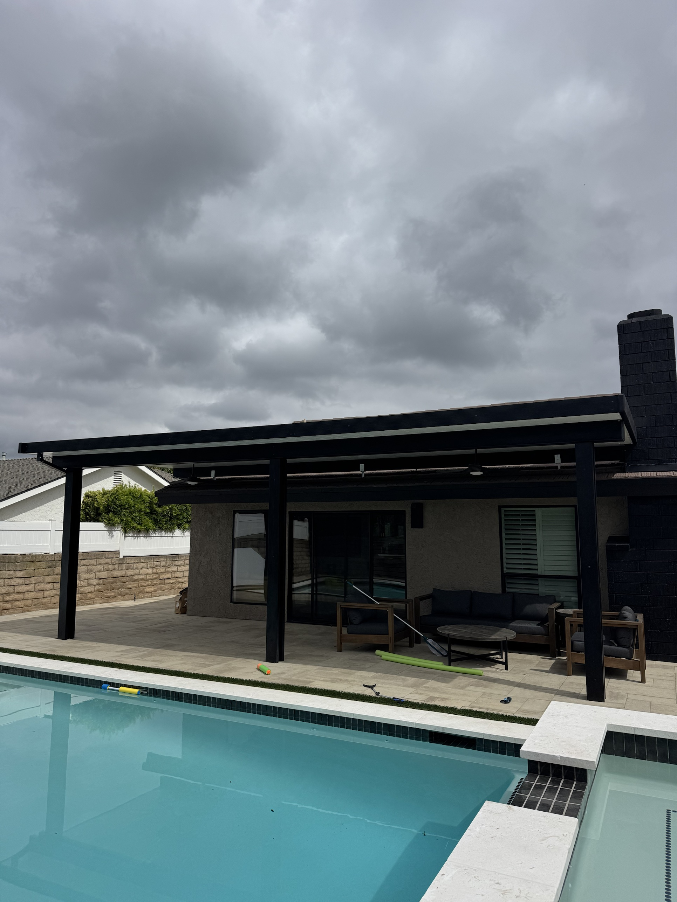
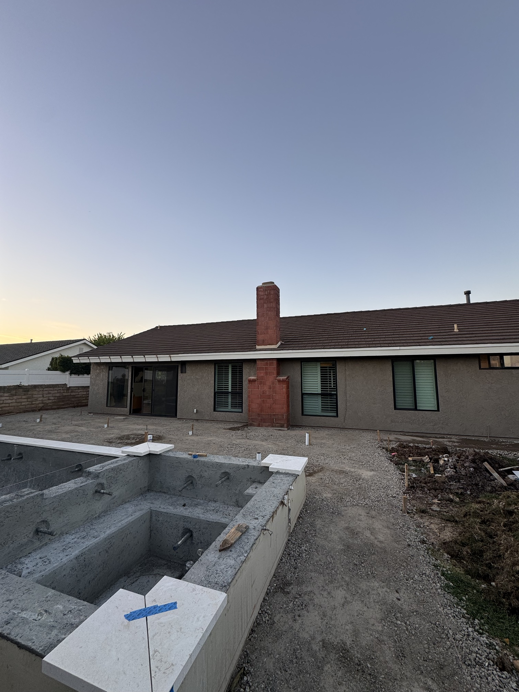
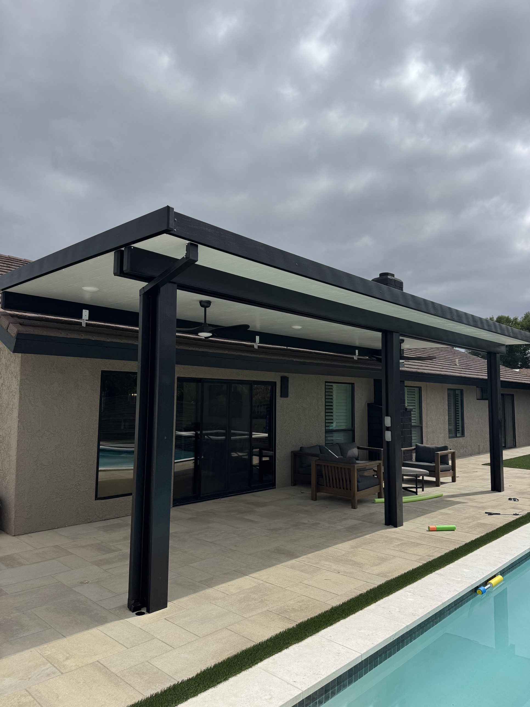
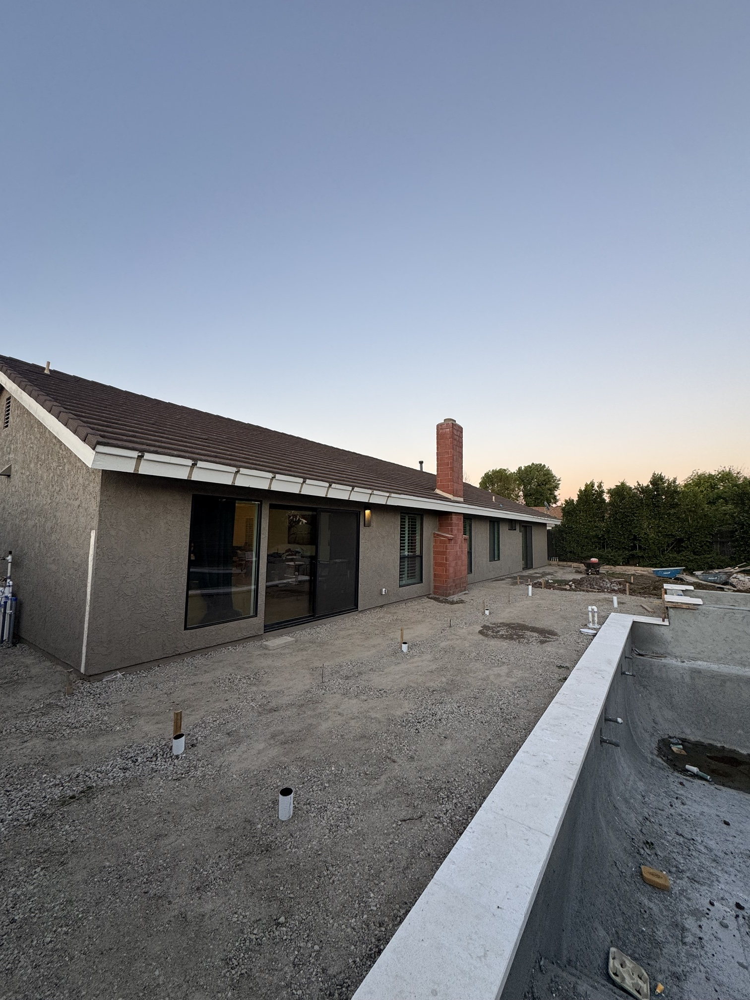
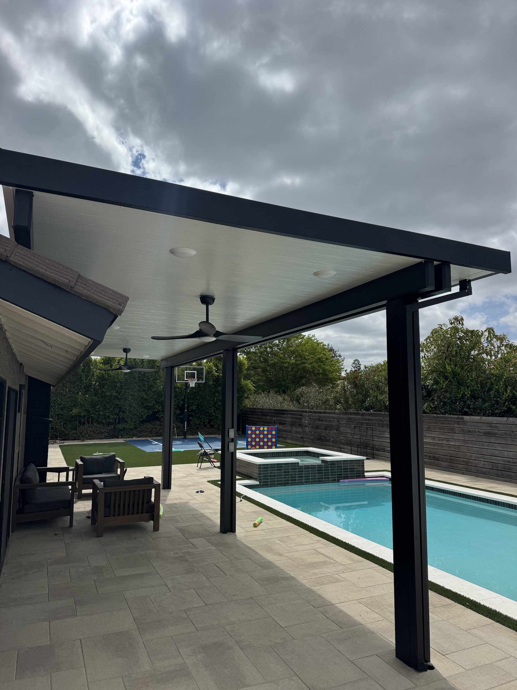
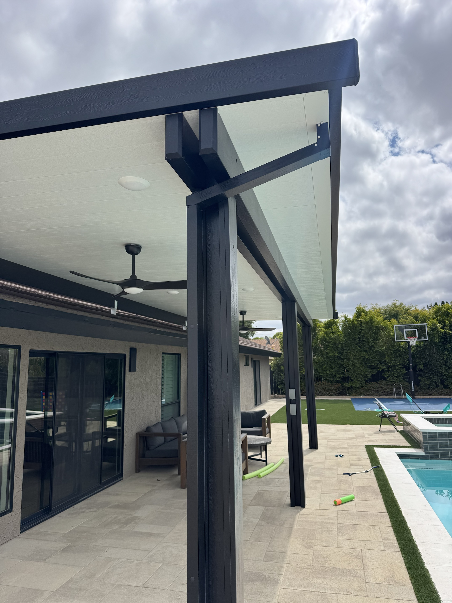

BEFORE
AFTER
BEFORE
AFTER
BEFORE
AFTER
DAY 1
Gravel, stakes and zero shade.
THE REVEAL
Now: shade by the pool.
From bare ground…
…to poolside living.
One long, empty wall…
…one long, covered patio.
ROOF MOUNT COVER
White roof.
Black trim.
Roof mount
Ceiling fans
Recessed lights
Every line, done right.
Ready for every pool day.
Your patio could be next.
805-889-0869
FREE ESTIMATES · LIC. 971127